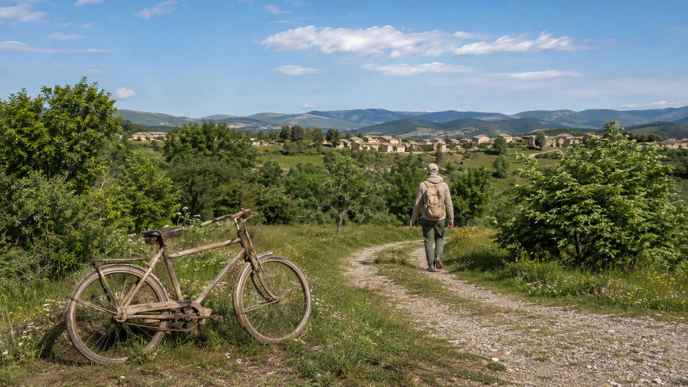

Masking quality bar
2 passes
Select, then matte at full resolution
Light HQ-SAM finds the region; a compact, commercially cleared alpha-matte head refines only the boundary band. Apple Vision is a useful native accelerator, not the quality contract.
A practical plan for AI object, sky, subject and depth masks; adaptive edits across hundreds of photographs; and faithful on-device upscaling that builds on ShopPhoto’s existing RAW denoise and scene-linear GPU pipeline.
ShopPhoto already has tiled neural RAW denoise, recoverable sidecar sync, background export and a scene-linear rgba16float pipeline. Extend those foundations instead of introducing three unrelated subsystems.
Light HQ-SAM finds the region; a compact, commercially cleared alpha-matte head refines only the boundary band. Apple Vision is a useful native accelerator, not the quality contract.
Run ShopPhoto’s Auto logic per file in advance, stabilize bursts, persist the results to sidecars and refresh thumbnails. Preview and export then require no new Auto analysis.
Use a tiled DRCT-L ×2 model for clean, denoised photographs. It has 27.58M parameters—materially smaller than a diffusion stack—and leads the compact fidelity options researched here.
A better foundation model alone will not satisfy this quality bar. Production masking needs semantic selection, full-resolution boundary matting, edge-aware cleanup and a fast human repair loop.

This colored overlay is deliberately schematic, not a mask-quality sample. It demonstrates the interaction only. The acceptance target below is defined at original-image resolution.
The costly model only touches a narrow band around the edge; certain foreground and background remain unchanged. That makes 50–100 MP files practical without pretending a 1024 px mask contains 100 MP of boundary information.
| Model path | Best role | Footprint / evidence | License gate | ShopPhoto fit |
|---|---|---|---|---|
| Light HQ-SAM | Cross-platform promptable selector before matting | Official TinyViT table: 40.3 MB parameters, 41.2 FPS and 3.7 GB memory on the authors’ hardware | Apache-2.0 | Best first benchmark |
| Apple Vision instance masks | Foreground/person fast path on macOS | OS-provided model; high-resolution instance-mask generation API | No bundled weight | Apple accelerator |
| Compact alpha-matte head | Full-resolution hair, fur, glass and transition refinement | MAM demonstrates a 2.7M-parameter add-on with multi-scale alpha; ShopPhoto needs a separately cleared checkpoint | Train/license cleared weights | Quality-critical |
| Depth Anything V2 Small | Continuous near/far masks and depth falloff | 24.8M parameters; official Apple packages 19–50 MB; ONNX available | Apache-2.0 Small | Depth MVP |
| MobileSAM | Small compatibility selector | 9.66M parameters; ~40 MB checkpoint; official ONNX export | Apache-2.0 | Fallback, not quality ceiling |
| ViTMatte / ZIM checkpoints | Research reference for fine matting | Excellent ideas, but common ViTMatte training data and ZIM’s license block commercial bundling | Do not ship common weights | Research only |
| Grounding DINO + SAM | Future text prompts such as “red car” | Flexible but heavy two-model pipeline | Apache-2.0 core | Later option |
Light HQ-SAM proposes the region; a compact cleared matte head works on original-resolution edge tiles. Best balance of detail, size and parity across macOS/Windows.
RecommendedUse Vision for near-zero-download foreground/person masks, then the same ShopPhoto refiner and repair stack. Very attractive on macOS, but requires a Windows selector.
Native Apple pathSAM 2.1/HQ-SAM 2 may improve the starting region, but still does not replace alpha matting or repair. Offer only if corpus testing justifies the larger download.
Optional quality packYour proposed workflow is the right one: resolve the automatic result for every selected file ahead of time, persist it, refresh the previews, review exceptions and only then send the approved set to batch export.
Exact sync replaces selected target values—ideal for a curve, HSL, grading or a shared creative look. Auto Finish itself uses adaptive per-image analysis.
Current Auto Balance neutralizes tone for a hidden analysis render while keeping the profile/look context, waits for its exact asynchronous histogram, retries if the edit changes, applies a single undo step and marks the sidecar dirty. Batch should call the same pure Auto function and preserve those invariants.
The existing sync mechanism remains valuable for creative intent, but global Auto exposure/brightness/endpoints must be recomputed for every image. Persist algorithm version, input edit revision, confidence and final values so previews are deterministic and future Auto updates do not silently change old work.
| Layer | What exists | Upgrade | Why it matters |
|---|---|---|---|
| Global tone | Robust luminance percentiles, HDR-tail awareness and conservative bounds | Keep as the deterministic fallback | Already protects deliberate low/high-key scenes better than a naive mid-grey target |
| Spatial understanding | One global distribution | Add grid percentiles, highlight-area ratio and local contrast | Separates “bright sky over dark subject” from a uniformly dark photograph |
| Important subject | No subject weighting | Optional face/subject exposure target, only above a confidence threshold | Backlit people and products should not be sacrificed to the background histogram |
| Series stability | Each image stands alone | Group bursts by capture metadata/content; regularize against an anchor or robust median | Prevents visible brightness or WB flicker across near-identical frames |
| Validation | Synthetic histogram and real-file checks | Licensed scene corpus, pair consistency and blind human acceptance tests | Optimizes for finished photographs, not only plausible histogram statistics |
One RGBA16F surface only. Four 100 MP surfaces already consume ~3.2 GB, before RAW data, masks, model workspace, readback and encoding.
For a clean, denoised RAW crop, DRCT-L ×2 is the best quality-first candidate found here. It is a 27.58M-parameter transformer, not a multi-billion-parameter diffusion system, and it can run in overlapping tiles on both macOS and Windows.
Current crop · Whole image
Interaction mockup; estimates assume a 24 MP crop and one 8-byte-per-pixel RGBA16F surface.
| Family | Product label | Best input | Footprint | Decision |
|---|---|---|---|---|
| DRCT-L ×2 | Maximum Fidelity | Clean, already-denoised RAW crops and full images | 27.58M params; ~55 MB FP16 estimate | Flagship candidate |
| DRCT ×2 | Fidelity · Compact | Same clean-photo path on tighter hardware | 14.13M params; ~28 MB FP16 estimate | Smaller quality option |
| HAT-L / HAT | Faithful Alternative | Strong classical SR and conversion fallback | 40.84M / 20.77M params | Benchmark against DRCT |
| Real-HAT-GAN | Natural · Degraded | JPEGs, scans and real-world blur/noise after user approval | Transformer/GAN quality pack | May synthesize texture |
| SwinIR-M ×2 | Compatibility Fidelity | Clean photos where DRCT operators/backend fail qualification | ~12M-param class | Mature fallback |
| Real-ESRGAN compact | Fast Upscale | Speed, previews and lower-end devices | ~4.7 MB compact weight | Fast mode, not best mode |
| Diffusion / generative SR | Creative Detail | Explicit creative reconstruction | large | Never the default |
Export one qualified graph with fixed tile shapes. Use the Core ML execution provider on macOS and Windows ML execution providers on Windows; fall back per-node or per-model only after measuring graph partitioning.
Recommended architectureA direct Core ML conversion can be the Apple fast path if ONNX partitioning falls back too heavily. NVIDIA systems may opt into CUDA/TensorRT. Keep preprocessing and output parity identical.
Optional optimized pathsRetain compact Real-ESRGAN for broad, small-download acceleration. Do not make it the flagship until DRCT/HAT output parity and conversion are proven impossible on a target.
Compatibility / speedPublic DRCT, HAT and SwinIR checkpoints are trained on ordinary display-encoded image datasets. The safe inference is that they are not natively scene-linear Rec.2020/PQ models. ShopPhoto can still make the feature HDR-compatible by keeping the original HDR master authoritative and borrowing only bounded high-frequency detail from an SDR/perceptual guide.
Sidecars should own reproducible recipes. Embeddings, masks, depth maps and enhanced pixels are derivatives keyed by source content, geometry, upstream edit state, model ID and preprocessing version.
Orientation, lens geometry or source content changes invalidate analysis. Ordinary color edits should not. Manual repair operations replay on top of a regenerated AI base mask.
Encode into a unique temporary file in the destination directory, close it, then atomically rename. Retry failed items without redoing completed work; record source, recipe and model revisions.
Each phase is independently useful and validates the riskiest assumptions before the next layer adds weight or complexity.
AnalysisBackend, matting and restoration traitsVendor performance figures are directional only: hardware, precision, input size and compilation differ. ShopPhoto needs its own Apple Silicon, Windows GPU and CPU-fallback measurements.